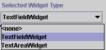
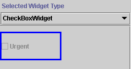
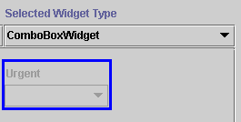

The Widget Type menu allows you to choose the widget type for the currently selected widget. The choices for type of widget depend on the value type of the slot. Each value type has a default widget for the slot, and a preset list of possible widget types based on the slot's value type.
Clicking on the menu displays a list of possible options for the currently selected widget. For example, for a simple text entry widget, you can select between a TextFieldWidget and a TextAreaWidget.

Making a new selection will change the appearance of the widget on the form. For example, the urgent slot is a slot of type Boolean. By default it is set to display as an CheckBoxWidget, which gives a drop-down list users can select from. By selecting ComboBoxWidget from the Widget Type menu and resizing it, you can have the widget display as a drop-down list with the choices true or false.
 
To set a widget type for a slot:
Select the name of the class whose form you wish to edit in the Forms pane at the left of the Forms Tab.
Click the widget you wish to edit in the Form Edit Pane. The widget will be highlighted with a blue outline.
Click the Selected Widget Type menu. A list of possible widget types is displayed.
Select the type of widget you wish to use.
If you do not select a widget type, Protégé-2000 uses a default type, based on the type of the slot.
If you select <none> from the Widget Type menu, the widget is removed from the Form Edit Pane and is not displayed in the Instances Form for that class. To redisplay a widget that has been removed by choosing <none>, open the Form Configuration dialog by double-clicking on the background of the Form Edit Pane and choose a different display type for the widget.
Next: The Widget Configuration Dialog